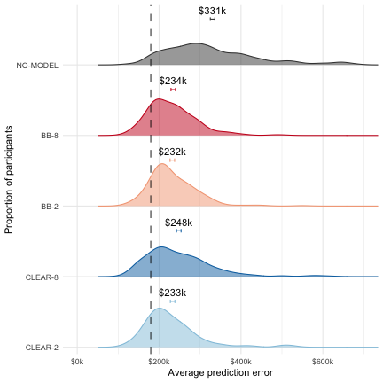

library(lmerTest)
library(lsmeans)
library(scales) library(ggrepel)
library(readr)
library(magrittr) library(dplyr)
## Warning: package 'dplyr' was built under R version 3.5.2
library(tidyr)
library(ggplot2) library(lsr) library(emmeans)
## Warning: package 'emmeans' was built under R version 3.5.2
library(xtable) theme_set(theme_bw()) emm_options(pbkrtest.limit = 12500) emm_options(lmerTest.limit = 12500) source('lib.R')
## Warning: package 'tibble' was built under R version 3.5.2
if (!dir.exists('figures/exp1')) dir.create('figures/exp1', recursive = T) my_pallete <- c('#92c5de','#0571b0','#f4a582','#ca0020','#404040') ####################################################### # Training phase ####################################################### # read data training_responses <- read_csv("data/exp1/data_training.csv")
# recode conditions training_responses <- training_responses %>% mutate(condition = recode_factor(as.factor(condition), "C1" = "CLEAR-2", "C3" = "CLEAR-8", "C0" = "BB-2", "C2" = "BB-8", "C4" = "NO-MODEL")) # break data in two parts for histograms # update apartment indeces to start from 1 training_responses1 <- filter(training_responses, q_id < 5) training_responses1$q_id <- training_responses1$q_id + 1 training_responses2 <- filter(training_responses, q_id >= 5) training_responses2$q_id <- training_responses2$q_id + 1 # plot breaks <- seq(0,3,1) ggplot(training_responses1, aes(x = final_pred, fill=condition)) + geom_histogram(binwidth = 0.1, alpha = 0.5) + geom_vline(alpha=.2, size=1, aes(xintercept = model_pred, linetype="Model's prediction"))+ geom_vline(alpha=.2, size=1, aes(xintercept = actual_price, linetype="Actual price"))+ scale_fill_manual(guide = FALSE,values=my_pallete) + scale_colour_manual(guide = FALSE, values=my_pallete)+ facet_grid(vars(condition), vars(q_id), scale='free')+ xlab("Participants' price prediction")+ ylab("Number of participants")+ scale_x_continuous(breaks = breaks, labels = sprintf('$%dM', breaks)) + theme(panel.grid.major = element_blank(), panel.grid.minor = element_blank(), legend.position="top", legend.title = element_blank(), legend.key = element_rect(size = 10), legend.key.size = unit(1.5, 'lines'), legend.text=element_text(size=12),axis.title.x = element_text(size=20), axis.title.y = element_text(size=18), axis.text.x = element_text(angle = 45, size=10), axis.text.y = element_text(size=14), strip.text = element_text(size=14))
ggsave(filename = "figures/exp1/dist_training_final_prediction_1.pdf", height=10, width=10) ggplot(training_responses2, aes(x = final_pred, fill=condition)) + geom_histogram(binwidth = 0.1, alpha = 0.5) + geom_vline(alpha=.2, size=1, aes(xintercept = model_pred, linetype="Model's prediction"))+ geom_vline(alpha=.2, size=1, aes(xintercept = actual_price, linetype="Actual price"))+ scale_fill_manual(guide = FALSE,values=my_pallete) + scale_colour_manual(guide = FALSE, values=my_pallete)+ facet_grid(vars(condition), vars(q_id), scale='free')+ xlab("Participants' price prediction")+ ylab("Number of participants")+ scale_x_continuous(breaks = breaks, labels = sprintf('$%dM', breaks)) + theme(panel.grid.major = element_blank(), panel.grid.minor = element_blank(), legend.position="top", legend.title = element_blank(), legend.key = element_rect(size = 10),legend.key.size = unit(1.5, 'lines'), legend.text=element_text(size=12), axis.title.x = element_text(size=20), axis.title.y = element_text(size=18), axis.text.x = element_text(angle = 45, size=10), axis.text.y = element_text(size=14), strip.text = element_text(size=14))

ggsave(filename = "figures/exp1/dist_training_final_prediction_2.pdf", height=10, width=10) ####################################################### # Testing phase ####################################################### # read data responses <- read_csv("data/exp1/data.csv")
# recode conditions and compute outcome measures responses <- responses %>% mutate(condition = recode_factor(as.factor(condition), "C1" = "CLEAR-2", "C3" = "CLEAR-8", "C0" = "BB-2", "C2" = "BB-8", "C4" = "NO-MODEL")) %>% mutate(pred_err = abs(final_pred - actual_price), model_err = abs(model_pred - actual_price), deviation = abs(final_pred - model_pred), sim_err = abs(user_model_pred - model_pred)) %>% ungroup() ######################################### # histograms ######################################### # users' final prediction breaks <- seq(1,3,1) responses1 <- filter(responses, q_id < 6) responses1$q_id <- responses1$q_id + 1 responses2 <- filter(responses, q_id >= 6) responses2$q_id <- responses2$q_id + 1 # replace the -1 for actual price of apartment 12 (synthetic) with NA responses1$actual_price <- replace(responses1$actual_price, which(responses1$actual_price == -1), NA) responses2$actual_price <- replace(responses2$actual_price, which(responses2$actual_price == -1), NA) ggplot(responses1, aes(x = final_pred, fill=condition)) + geom_histogram(binwidth = 0.1, alpha = 0.5) + geom_vline(alpha=.2, size=1, aes(xintercept = model_pred, linetype="Model's prediction"))+ geom_vline(alpha=.2, size=1, aes(xintercept = actual_price, linetype="Actual price"))+ scale_fill_manual(guide = FALSE,values=my_pallete) + scale_colour_manual(guide = FALSE, values=my_pallete)+ facet_grid(vars(condition), vars(q_id), scale='free')+ xlab("Participants' price prediction")+ ylab("Number of participants")+ scale_x_continuous(breaks = breaks, labels = sprintf('$%dM', breaks)) + theme(panel.grid.major = element_blank(), panel.grid.minor = element_blank(), legend.position="top", legend.title = element_blank(), legend.key = element_rect(size = 10), legend.key.size = unit(1.5, 'lines'), legend.text=element_text(size=12), axis.title.x = element_text(size=20), axis.title.y = element_text(size=18), axis.text.x = element_text(angle = 45, size=10), axis.text.y = element_text(size=14), strip.text = element_text(size=14))
ggsave(filename = "figures/exp1/dist_final_prediction_1.pdf", height=10, width=10) ggplot(responses2, aes(x = final_pred, fill=condition)) + geom_histogram(binwidth = 0.1, alpha = 0.5) + geom_vline(alpha=.2, size=1, aes(xintercept = model_pred, linetype="Model's prediction"))+ geom_vline(alpha=.2, size=1, aes(xintercept = actual_price, linetype="Actual price"))+ scale_fill_manual(guide = FALSE,values=my_pallete) + scale_colour_manual(guide = FALSE, values=my_pallete)+ facet_grid(vars(condition), vars(q_id), scale='free')+ xlab("Participants' price prediction")+ ylab("Number of participants")+ scale_x_continuous(breaks = breaks, labels = sprintf('$%dM', breaks)) + theme(panel.grid.major = element_blank(), panel.grid.minor = element_blank(), legend.position="top", legend.title = element_blank(), legend.key = element_rect(size = 10), legend.key.size = unit(1.5, 'lines'), legend.text=element_text(size=12), axis.title.x = element_text(size=20), axis.title.y = element_text(size=18), axis.text.x = element_text(angle = 45, size=10), axis.text.y = element_text(size=14), strip.text = element_text(size=14))
## Warning: Removed 1250 rows containing missing values (geom_vline).
ggsave(filename = "figures/exp1/dist_final_prediction_2.pdf", height=10, width=10)
## Warning: Removed 1250 rows containing missing values (geom_vline).
######################################### # hypotheses analyses and plots ######################################### # limit everything to first 10 questions for now responses_normal <- filter(responses, q_id < 10) # limit to the four primary conditions # add transparency and number of features factors model_data <- filter(responses_normal, condition != "NO-MODEL") %>% mutate(transparency = ifelse(condition == "CLEAR-2" | condition == "CLEAR-8", "CLEAR", "BB")) %>% mutate(num_features = ifelse(condition == "CLEAR-2" | condition == "BB-2", "two", "eight")) ######################################## # DEVIATION FROM THE MODEL ######################################## # fit the two factor model hlm_model <- lmer(deviation ~ transparency*num_features + (1|worker_id), data=model_data) summary(hlm_model)
## Linear mixed model fit by REML. t-tests use Satterthwaite's method ['lmerModLmerTest'] ## Formula: deviation ~ transparency * num_features + (1 | worker_id) ## Data: model_data ## ## REML criterion at convergence: -11263.4 ## ## Scaled residuals: ## Min 1Q Median 3Q Max ## -4.8859 -0.5903 -0.1514 0.4332 8.3083 ## ## Random effects: ## Groups Name Variance Std.Dev. ## worker_id (Intercept) 0.004361 0.06604 ## Residual 0.016599 0.12884 ## Number of obs: 9980, groups: worker_id, 998 ## ## Fixed effects: ## Estimate Std. Error df t value Pr(>|t|) ## (Intercept) 0.150547 0.004850 994.000012 31.044 <2e-16 *** ## transparencyCLEAR 0.013016 0.006920 994.000000 1.881 0.0603 . ## num_featurestwo -0.006053 0.006920 994.000000 -0.875 0.3820 ## transparencyCLEAR:num_featurestwo -0.002308 0.009826 993.999995 -0.235 0.8143 ## --- ## Signif. codes: 0 '***' 0.001 '**' 0.01 '*' 0.05 '.' 0.1 ' ' 1 ## ## Correlation of Fixed Effects: ## (Intr) trCLEAR nm_ftr ## trnsprCLEAR -0.701 ## num_fetrstw -0.701 0.491 ## trnsCLEAR:_ 0.494 -0.704 -0.704
# look at ANOVA anova_table <- anova(hlm_model) # export in LaTEX format xtable(anova_table)
## % latex table generated in R 3.5.1 by xtable 1.8-2 package
## % Fri Jan 8 17:58:09 2021
## \begin{table}[ht]
## \centering
## \begin{tabular}{lrrrrrr}
## \hline
## & Sum Sq & Mean Sq & NumDF & DenDF & F value & Pr($>$F) \\
## \hline
## transparency & 0.10 & 0.10 & 1.00 & 994.00 & 5.83 & 0.0159 \\
## num\_features & 0.04 & 0.04 & 1.00 & 994.00 & 2.15 & 0.1427 \\
## transparency:num\_features & 0.00 & 0.00 & 1.00 & 994.00 & 0.06 & 0.8143 \\
## \hline
## \end{tabular}
## \end{table}
# get the marginal means for all combinations of transparency and number of features means <- emmeans(hlm_model, c("transparency", "num_features")) # setup contrasts clist <- list(clear2_vs_bb8 = c(-1, 0, 0, 1)) emmeans::contrast(means, clist)
## contrast estimate SE df t.ratio p.value ## clear2_vs_bb8 0.00465 0.00691 994 0.673 0.5009
# setup contrasts clist <- list(clear8_vs_else = c(-1, 3, -1, -1)) emmeans::contrast(means, clist)
## contrast estimate SE df t.ratio p.value ## clear8_vs_else 0.0404 0.0171 994 2.369 0.0180
# setup contrasts clist <- list(clear2_vs_else = c(-1, -1, -1, 3)) emmeans::contrast(means, clist)
## contrast estimate SE df t.ratio p.value ## clear2_vs_else 0.007 0.0171 994 0.411 0.6815
model_data %>% mutate(outcome = deviation * 1e3) %>% plot_distributions_with_means(., 'Average deviation from the model', 'Proportion of participants', my_pallete)
## Warning: Ignoring unknown aesthetics: x
## Warning: The plyr::rename operation has created duplicates for the following name(s): ## (`size`)
ggsave(file = 'figures/exp1/dev_from_model.pdf', height = 4, width = 4)
######################################## # Self-reported confidence ######################################## # fit the two factor model hlm_model <- lmer(model_conf ~ transparency*num_features + (1|worker_id), data=model_data) summary(hlm_model)
## Linear mixed model fit by REML. t-tests use Satterthwaite's method ['lmerModLmerTest'] ## Formula: model_conf ~ transparency * num_features + (1 | worker_id) ## Data: model_data ## ## REML criterion at convergence: 28249.1 ## ## Scaled residuals: ## Min 1Q Median 3Q Max ## -3.6798 -0.5754 0.0235 0.6455 3.4948 ## ## Random effects: ## Groups Name Variance Std.Dev. ## worker_id (Intercept) 0.3406 0.5836 ## Residual 0.8433 0.9183 ## Number of obs: 9980, groups: worker_id, 998 ## ## Fixed effects: ## Estimate Std. Error df t value Pr(>|t|) ## (Intercept) 3.23906 0.04074 994.00001 79.499 <2e-16 *** ## transparencyCLEAR 0.12976 0.05814 994.00001 2.232 0.0258 * ## num_featurestwo -0.01437 0.05814 994.00001 -0.247 0.8049 ## transparencyCLEAR:num_featurestwo 0.13264 0.08255 994.00000 1.607 0.1084 ## --- ## Signif. codes: 0 '***' 0.001 '**' 0.01 '*' 0.05 '.' 0.1 ' ' 1 ## ## Correlation of Fixed Effects: ## (Intr) trCLEAR nm_ftr ## trnsprCLEAR -0.701 ## num_fetrstw -0.701 0.491 ## trnsCLEAR:_ 0.494 -0.704 -0.704
# look at ANOVA anova_table <- anova(hlm_model) # export in LaTEX format xtable(anova_table)
## % latex table generated in R 3.5.1 by xtable 1.8-2 package
## % Fri Jan 8 17:58:10 2021
## \begin{table}[ht]
## \centering
## \begin{tabular}{lrrrrrr}
## \hline
## & Sum Sq & Mean Sq & NumDF & DenDF & F value & Pr($>$F) \\
## \hline
## transparency & 19.03 & 19.03 & 1.00 & 994.00 & 22.57 & 0.0000 \\
## num\_features & 1.34 & 1.34 & 1.00 & 994.00 & 1.58 & 0.2084 \\
## transparency:num\_features & 2.18 & 2.18 & 1.00 & 994.00 & 2.58 & 0.1084 \\
## \hline
## \end{tabular}
## \end{table}
# get the marginal means for all combinations of transparency and number of features means <- emmeans(hlm_model, c("transparency", "num_features")) # setup contrasts clist <- list(clear2_vs_bb8 = c(-1, 0, 0, 1)) emmeans::contrast(means, clist)
## contrast estimate SE df t.ratio p.value ## clear2_vs_bb8 0.248 0.0581 994 4.270 <.0001
# effect sizes clear2_data <- filter(model_data, condition == "CLEAR-2") bb8_data <- filter(model_data, condition == "BB-8") effect_size <- cohensD(clear2_data$model_conf, bb8_data$model_conf) # compute and show the means and standard errors by condition from the model hlm_model <- lmer(model_conf ~ condition + (1 | worker_id), data = model_data) means <- lsmeansLT(hlm_model, "condition") print(means)
## Least Squares Means table: ## ## Estimate Std. Error df t value lower upper Pr(>|t|) ## conditionCLEAR-2 3.487097 0.041395 994 84.239 3.405864 3.568329 < 2.2e-16 *** ## conditionCLEAR-8 3.368826 0.041479 994 81.218 3.287429 3.450223 < 2.2e-16 *** ## conditionBB-2 3.224696 0.041479 994 77.743 3.143300 3.306093 < 2.2e-16 *** ## conditionBB-8 3.239062 0.040743 994 79.499 3.159109 3.319016 < 2.2e-16 *** ## --- ## Signif. codes: 0 '***' 0.001 '**' 0.01 '*' 0.05 '.' 0.1 ' ' 1 ## ## Confidence level: 95% ## Degrees of freedom method: Satterthwaite
######################################## # Simulation error ######################################## # fit the two factor model hlm_model <- lmer(sim_err ~ transparency*num_features + (1|worker_id), data=model_data) summary(hlm_model)
## Linear mixed model fit by REML. t-tests use Satterthwaite's method ['lmerModLmerTest'] ## Formula: sim_err ~ transparency * num_features + (1 | worker_id) ## Data: model_data ## ## REML criterion at convergence: -2319.7 ## ## Scaled residuals: ## Min 1Q Median 3Q Max ## -2.7392 -0.6144 -0.2247 0.3985 6.5875 ## ## Random effects: ## Groups Name Variance Std.Dev. ## worker_id (Intercept) 0.009739 0.09869 ## Residual 0.040975 0.20242 ## Number of obs: 9980, groups: worker_id, 998 ## ## Fixed effects: ## Estimate Std. Error df t value Pr(>|t|) ## (Intercept) 0.239492 0.007352 993.999988 32.576 < 2e-16 *** ## transparencyCLEAR 0.021560 0.010491 993.999997 2.055 0.04014 * ## num_featurestwo -0.033460 0.010491 993.999997 -3.189 0.00147 ** ## transparencyCLEAR:num_featurestwo -0.095940 0.014896 994.000002 -6.441 1.85e-10 *** ## --- ## Signif. codes: 0 '***' 0.001 '**' 0.01 '*' 0.05 '.' 0.1 ' ' 1 ## ## Correlation of Fixed Effects: ## (Intr) trCLEAR nm_ftr ## trnsprCLEAR -0.701 ## num_fetrstw -0.701 0.491 ## trnsCLEAR:_ 0.494 -0.704 -0.704
# look at ANOVA anova_table <- anova(hlm_model) # export in LaTEX format xtable(anova_table)
## % latex table generated in R 3.5.1 by xtable 1.8-2 package
## % Fri Jan 8 17:58:11 2021
## \begin{table}[ht]
## \centering
## \begin{tabular}{lrrrrrr}
## \hline
## & Sum Sq & Mean Sq & NumDF & DenDF & F value & Pr($>$F) \\
## \hline
## transparency & 0.52 & 0.52 & 1.00 & 994.00 & 12.57 & 0.0004 \\
## num\_features & 4.90 & 4.90 & 1.00 & 994.00 & 119.54 & 0.0000 \\
## transparency:num\_features & 1.70 & 1.70 & 1.00 & 994.00 & 41.48 & 0.0000 \\
## \hline
## \end{tabular}
## \end{table}
# get the marginal means for all combinations of transparency and number of features means <- emmeans(hlm_model, c("transparency", "num_features")) # setup contrasts clist <- list(clear2_vs_else = c(-1, -1, -1, 3)) emmeans::contrast(means, clist)
## contrast estimate SE df t.ratio p.value ## clear2_vs_else -0.312 0.0259 994 -12.055 <.0001
clist <- list(clear8_vs_else = c(-1, 3, -1, -1)) emmeans::contrast(means, clist)
## contrast estimate SE df t.ratio p.value ## clear8_vs_else 0.206 0.0259 994 7.957 <.0001
model_data %>% mutate(outcome = sim_err * 1e3) %>% plot_distributions_with_means(., 'Average simulation error', 'Proportion of participants', my_pallete, xlim_percentile = .95)
## Warning: Ignoring unknown aesthetics: x ## Warning: The plyr::rename operation has created duplicates for the following name(s): ## (`size`)
ggsave(file = 'figures/exp1/sim_error.pdf', height = 4, width = 4)
######################################## # PREDICTION ERROR ######################################## # primary conditions hlm_model <- lmer(pred_err ~ condition + (1|worker_id), data=model_data) summary(hlm_model)
## Linear mixed model fit by REML. t-tests use Satterthwaite's method ['lmerModLmerTest'] ## Formula: pred_err ~ condition + (1 | worker_id) ## Data: model_data ## ## REML criterion at convergence: -3579.3 ## ## Scaled residuals: ## Min 1Q Median 3Q Max ## -1.826 -0.666 -0.168 0.399 9.188 ## ## Random effects: ## Groups Name Variance Std.Dev. ## worker_id (Intercept) 0.001736 0.04167 ## Residual 0.039311 0.19827 ## Number of obs: 9980, groups: worker_id, 998 ## ## Fixed effects: ## Estimate Std. Error df t value Pr(>|t|) ## (Intercept) 2.329e-01 4.781e-03 9.940e+02 48.728 <2e-16 *** ## conditionCLEAR-8 1.507e-02 6.768e-03 9.940e+02 2.227 0.0262 * ## conditionBB-2 -6.763e-04 6.768e-03 9.940e+02 -0.100 0.9204 ## conditionBB-8 1.510e-03 6.708e-03 9.940e+02 0.225 0.8220 ## --- ## Signif. codes: 0 '***' 0.001 '**' 0.01 '*' 0.05 '.' 0.1 ' ' 1 ## ## Correlation of Fixed Effects: ## (Intr) cCLEAR cnBB-2 ## cndtCLEAR-8 -0.706 ## conditnBB-2 -0.706 0.499 ## conditnBB-8 -0.713 0.503 0.503
# look at ANOVA anova_table <- anova(hlm_model) # export in LaTEX format xtable(anova_table)
## % latex table generated in R 3.5.1 by xtable 1.8-2 package
## % Fri Jan 8 17:58:12 2021
## \begin{table}[ht]
## \centering
## \begin{tabular}{lrrrrrr}
## \hline
## & Sum Sq & Mean Sq & NumDF & DenDF & F value & Pr($>$F) \\
## \hline
## condition & 0.29 & 0.10 & 3.00 & 994.00 & 2.43 & 0.0642 \\
## \hline
## \end{tabular}
## \end{table}
# get the marginal means for conditions means <- emmeans(hlm_model, "condition") # two-way anova hlm_model <- lmer(pred_err ~ transparency * num_features + (1|worker_id), data=model_data) summary(hlm_model)
## Linear mixed model fit by REML. t-tests use Satterthwaite's method ['lmerModLmerTest'] ## Formula: pred_err ~ transparency * num_features + (1 | worker_id) ## Data: model_data ## ## REML criterion at convergence: -3579.3 ## ## Scaled residuals: ## Min 1Q Median 3Q Max ## -1.826 -0.666 -0.168 0.399 9.188 ## ## Random effects: ## Groups Name Variance Std.Dev. ## worker_id (Intercept) 0.001736 0.04167 ## Residual 0.039311 0.19827 ## Number of obs: 9980, groups: worker_id, 998 ## ## Fixed effects: ## Estimate Std. Error df t value Pr(>|t|) ## (Intercept) 0.234453 0.004705 994.000022 49.829 <2e-16 *** ## transparencyCLEAR 0.013563 0.006714 994.000022 2.020 0.0437 * ## num_featurestwo -0.002186 0.006714 994.000022 -0.326 0.7448 ## transparencyCLEAR:num_featurestwo -0.012887 0.009533 994.000022 -1.352 0.1768 ## --- ## Signif. codes: 0 '***' 0.001 '**' 0.01 '*' 0.05 '.' 0.1 ' ' 1 ## ## Correlation of Fixed Effects: ## (Intr) trCLEAR nm_ftr ## trnsprCLEAR -0.701 ## num_fetrstw -0.701 0.491 ## trnsCLEAR:_ 0.494 -0.704 -0.704
# look at ANOVA anova_table <- anova(hlm_model) # export in LaTEX format xtable(anova_table)
## % latex table generated in R 3.5.1 by xtable 1.8-2 package
## % Fri Jan 8 17:58:13 2021
## \begin{table}[ht]
## \centering
## \begin{tabular}{lrrrrrr}
## \hline
## & Sum Sq & Mean Sq & NumDF & DenDF & F value & Pr($>$F) \\
## \hline
## transparency & 0.09 & 0.09 & 1.00 & 994.00 & 2.23 & 0.1356 \\
## num\_features & 0.13 & 0.13 & 1.00 & 994.00 & 3.28 & 0.0705 \\
## transparency:num\_features & 0.07 & 0.07 & 1.00 & 994.00 & 1.83 & 0.1768 \\
## \hline
## \end{tabular}
## \end{table}
# setup contrasts means <- emmeans(hlm_model, c("transparency","num_features")) clist <- list(clear8_vs_else = c(-1, 3, -1, -1)) emmeans::contrast(means, clist)
## contrast estimate SE df t.ratio p.value ## clear8_vs_else 0.0444 0.0166 994 2.679 0.0075
# all conditions including baseline model_baseline_data <- filter(responses_normal, q_id < 10) # fit the one factor model hlm_model <- lmer(pred_err ~ condition + (1|worker_id), data=model_baseline_data) summary(hlm_model)
## Linear mixed model fit by REML. t-tests use Satterthwaite's method ['lmerModLmerTest'] ## Formula: pred_err ~ condition + (1 | worker_id) ## Data: model_baseline_data ## ## REML criterion at convergence: -2062 ## ## Scaled residuals: ## Min 1Q Median 3Q Max ## -2.1061 -0.6328 -0.1638 0.3845 8.1336 ## ## Random effects: ## Groups Name Variance Std.Dev. ## worker_id (Intercept) 0.002828 0.05318 ## Residual 0.047227 0.21732 ## Number of obs: 12500, groups: worker_id, 1250 ## ## Fixed effects: ## Estimate Std. Error df t value Pr(>|t|) ## (Intercept) 2.329e-01 5.518e-03 1.245e+03 42.216 <2e-16 *** ## conditionCLEAR-8 1.507e-02 7.811e-03 1.245e+03 1.930 0.0539 . ## conditionBB-2 -6.763e-04 7.811e-03 1.245e+03 -0.087 0.9310 ## conditionBB-8 1.510e-03 7.742e-03 1.245e+03 0.195 0.8454 ## conditionNO-MODEL 9.761e-02 7.772e-03 1.245e+03 12.559 <2e-16 *** ## --- ## Signif. codes: 0 '***' 0.001 '**' 0.01 '*' 0.05 '.' 0.1 ' ' 1 ## ## Correlation of Fixed Effects: ## (Intr) cCLEAR cnBB-2 cnBB-8 ## cndtCLEAR-8 -0.706 ## conditnBB-2 -0.706 0.499 ## conditnBB-8 -0.713 0.503 0.503 ## cndNO-MODEL -0.710 0.501 0.501 0.506
# look at ANOVA anova_table <- anova(hlm_model) # export in LaTEX format xtable(anova_table)
## % latex table generated in R 3.5.1 by xtable 1.8-2 package
## % Fri Jan 8 17:58:13 2021
## \begin{table}[ht]
## \centering
## \begin{tabular}{lrrrrrr}
## \hline
## & Sum Sq & Mean Sq & NumDF & DenDF & F value & Pr($>$F) \\
## \hline
## condition & 11.30 & 2.82 & 4.00 & 1245.00 & 59.80 & 0.0000 \\
## \hline
## \end{tabular}
## \end{table}
# get the marginal means for conditions means <- emmeans(hlm_model, "condition") # setup contrasts clist <- list(model_vs_baseline = c(-1, -1, -1, -1, 4)) emmeans::contrast(means, clist)
## contrast estimate SE df t.ratio p.value ## model_vs_baseline 0.375 0.0245 1245 15.284 <.0001
xbreaks <- c(0, 200, 400, 600) model_baseline_data %>% mutate(outcome = pred_err * 1e3) %>% plot_distributions_with_means(., 'Average prediction error', 'Proportion of participants', my_pallete, xbreaks = xbreaks, vertical_line = mean(model_baseline_data$model_err) * 1e3, xlim_percentile = 0.95)
## Warning: Ignoring unknown aesthetics: x ## Warning: The plyr::rename operation has created duplicates for the following name(s): ## (`size`)

ggsave(file = 'figures/exp1/prediction_error.pdf', height = 4.5, width =4)
#################################### # last two questions (unusual apartments) #################################### responses_unusual <- filter(responses, q_id >= 10) ######################################## # deviation for q11 ######################################## q11_data <- filter(responses_unusual, q_id == 10) # prediction error in no-model vs rest lm_model <- lm(pred_err ~ condition, data=q11_data) means <- emmeans(lm_model, c("condition")) clist <- list(baseline_vs_rest = c(-1, -1, -1, -1, 4)) emmeans::contrast(means, clist)
## contrast estimate SE df t.ratio p.value ## baseline_vs_rest -0.488 0.0611 1245 -7.988 <.0001
#fit a model for deviation q11_data <- filter(q11_data, condition != "NO-MODEL") %>% mutate(transparency = ifelse(condition == "CLEAR-2" | condition == "CLEAR-8", "CLEAR", "BB")) %>% mutate(num_features = ifelse(condition == "CLEAR-2" | condition == "BB-2", "two", "eight")) # two-way anova q11_anova <- aov(pred_err ~ transparency*num_features, data=q11_data) summary(q11_anova)
## Df Sum Sq Mean Sq F value Pr(>F) ## transparency 1 1.17 1.1745 31.983 2.03e-08 *** ## num_features 1 1.66 1.6596 45.194 3.00e-11 *** ## transparency:num_features 1 0.00 0.0046 0.126 0.723 ## Residuals 994 36.50 0.0367 ## --- ## Signif. codes: 0 '***' 0.001 '**' 0.01 '*' 0.05 '.' 0.1 ' ' 1
# fit the one factor model lm_model <- lm(deviation ~ condition, data=q11_data) summary(lm_model)
## ## Call: ## lm(formula = deviation ~ condition, data = q11_data) ## ## Residuals: ## Min 1Q Median 3Q Max ## -0.16640 -0.06640 -0.04575 0.04492 1.35425 ## ## Coefficients: ## Estimate Std. Error t value Pr(>|t|) ## (Intercept) 0.1560484 0.0083064 18.787 <2e-16 *** ## conditionCLEAR-8 -0.0102994 0.0117589 -0.876 0.381 ## conditionBB-2 0.0103484 0.0117589 0.880 0.379 ## conditionBB-8 -0.0009703 0.0116549 -0.083 0.934 ## --- ## Signif. codes: 0 '***' 0.001 '**' 0.01 '*' 0.05 '.' 0.1 ' ' 1 ## ## Residual standard error: 0.1308 on 994 degrees of freedom ## Multiple R-squared: 0.003097, Adjusted R-squared: 8.814e-05 ## F-statistic: 1.029 on 3 and 994 DF, p-value: 0.3788
# look at one-way ANOVA anova(lm_model)
## Analysis of Variance Table ## ## Response: deviation ## Df Sum Sq Mean Sq F value Pr(>F) ## condition 3 0.0528 0.017612 1.0293 0.3788 ## Residuals 994 17.0085 0.017111
# run 2-by-2 anova for deviation on q11 # fit the two factor model lm_model <- lm(deviation ~ transparency*num_features, data=q11_data) summary(lm_model)
## ## Call: ## lm(formula = deviation ~ transparency * num_features, data = q11_data) ## ## Residuals: ## Min 1Q Median 3Q Max ## -0.16640 -0.06640 -0.04575 0.04492 1.35425 ## ## Coefficients: ## Estimate Std. Error t value Pr(>|t|) ## (Intercept) 0.155078 0.008176 18.968 <2e-16 *** ## transparencyCLEAR -0.009329 0.011667 -0.800 0.424 ## num_featurestwo 0.011319 0.011667 0.970 0.332 ## transparencyCLEAR:num_featurestwo -0.001019 0.016565 -0.062 0.951 ## --- ## Signif. codes: 0 '***' 0.001 '**' 0.01 '*' 0.05 '.' 0.1 ' ' 1 ## ## Residual standard error: 0.1308 on 994 degrees of freedom ## Multiple R-squared: 0.003097, Adjusted R-squared: 8.814e-05 ## F-statistic: 1.029 on 3 and 994 DF, p-value: 0.3788
# look at ANOVA anova_table <- anova(lm_model) # export in LaTEX format xtable(anova_table)
## % latex table generated in R 3.5.1 by xtable 1.8-2 package
## % Fri Jan 8 17:58:14 2021
## \begin{table}[ht]
## \centering
## \begin{tabular}{lrrrrr}
## \hline
## & Df & Sum Sq & Mean Sq & F value & Pr($>$F) \\
## \hline
## transparency & 1 & 0.02 & 0.02 & 1.38 & 0.2405 \\
## num\_features & 1 & 0.03 & 0.03 & 1.70 & 0.1920 \\
## transparency:num\_features & 1 & 0.00 & 0.00 & 0.00 & 0.9509 \\
## Residuals & 994 & 17.01 & 0.02 & & \\
## \hline
## \end{tabular}
## \end{table}
# get the marginal means for all combinations of transparency and number of features means <- emmeans(lm_model, c("transparency", "num_features")) # setup contrasts clist <- list(clear_vs_bb = c(-1, 1, -1, 1)) emmeans::contrast(means, clist)
## contrast estimate SE df t.ratio p.value ## clear_vs_bb -0.0197 0.0166 994 -1.188 0.2351
######################################## # deviation for q12 ######################################## # comparison of prediction error for baseline with the rest q12_data <- filter(responses_unusual, q_id == 11) #fit a model for deviation q12_data <- filter(q12_data, condition != "NO-MODEL") %>% mutate(transparency = ifelse(condition == "CLEAR-2" | condition == "CLEAR-8", "CLEAR", "BB")) %>% mutate(num_features = ifelse(condition == "CLEAR-2" | condition == "BB-2", "two", "eight")) # fit the one factor model lm_model <- lm(deviation ~ condition, data=q12_data) summary(lm_model)
## ## Call: ## lm(formula = deviation ~ condition, data = q12_data) ## ## Residuals: ## Min 1Q Median 3Q Max ## -0.27930 -0.14372 -0.02984 0.07976 1.02070 ## ## Coefficients: ## Estimate Std. Error t value Pr(>|t|) ## (Intercept) 0.229839 0.012427 18.496 < 2e-16 *** ## conditionCLEAR-8 -0.009596 0.017592 -0.545 0.58555 ## conditionBB-2 0.013886 0.017592 0.789 0.43009 ## conditionBB-8 0.049458 0.017436 2.837 0.00465 ** ## --- ## Signif. codes: 0 '***' 0.001 '**' 0.01 '*' 0.05 '.' 0.1 ' ' 1 ## ## Residual standard error: 0.1957 on 994 degrees of freedom ## Multiple R-squared: 0.01317, Adjusted R-squared: 0.01019 ## F-statistic: 4.421 on 3 and 994 DF, p-value: 0.004259
# look at one-way ANOVA anova(lm_model)
## Analysis of Variance Table ## ## Response: deviation ## Df Sum Sq Mean Sq F value Pr(>F) ## condition 3 0.508 0.169311 4.4211 0.004259 ** ## Residuals 994 38.066 0.038296 ## --- ## Signif. codes: 0 '***' 0.001 '**' 0.01 '*' 0.05 '.' 0.1 ' ' 1
# run 2-by-2 anova for deviation on q11 # fit the two factor model lm_model <- lm(deviation ~ transparency*num_features, data=q12_data) summary(lm_model)
## ## Call: ## lm(formula = deviation ~ transparency * num_features, data = q12_data) ## ## Residuals: ## Min 1Q Median 3Q Max ## -0.27930 -0.14372 -0.02984 0.07976 1.02070 ## ## Coefficients: ## Estimate Std. Error t value Pr(>|t|) ## (Intercept) 0.27930 0.01223 22.835 < 2e-16 *** ## transparencyCLEAR -0.05905 0.01745 -3.383 0.000744 *** ## num_featurestwo -0.03557 0.01745 -2.038 0.041807 * ## transparencyCLEAR:num_featurestwo 0.04517 0.02478 1.823 0.068652 . ## --- ## Signif. codes: 0 '***' 0.001 '**' 0.01 '*' 0.05 '.' 0.1 ' ' 1 ## ## Residual standard error: 0.1957 on 994 degrees of freedom ## Multiple R-squared: 0.01317, Adjusted R-squared: 0.01019 ## F-statistic: 4.421 on 3 and 994 DF, p-value: 0.004259
# look at ANOVA anova_table <- anova(lm_model) # export in LaTEX format xtable(anova_table)
## % latex table generated in R 3.5.1 by xtable 1.8-2 package
## % Fri Jan 8 17:58:14 2021
## \begin{table}[ht]
## \centering
## \begin{tabular}{lrrrrr}
## \hline
## & Df & Sum Sq & Mean Sq & F value & Pr($>$F) \\
## \hline
## transparency & 1 & 0.34 & 0.34 & 8.81 & 0.0031 \\
## num\_features & 1 & 0.04 & 0.04 & 1.13 & 0.2882 \\
## transparency:num\_features & 1 & 0.13 & 0.13 & 3.32 & 0.0687 \\
## Residuals & 994 & 38.07 & 0.04 & & \\
## \hline
## \end{tabular}
## \end{table}
# get the marginal means for all combinations of transparency and number of features means <- emmeans(lm_model, c("transparency", "num_features")) # setup contrasts clist <- list(clear_vs_bb = c(-1, 1, -1, 1)) emmeans::contrast(means, clist)
## contrast estimate SE df t.ratio p.value ## clear_vs_bb -0.0729 0.0248 994 -2.943 0.0033
plot_data <- q12_data %>% group_by(condition) %>% summarize(mean = mean(final_pred), se = sd(final_pred) / sqrt(n()), model_pred = mean(model_pred * 1e6), facet = 'Experiment 1, apartment 12: 1 bed, 3 bath') print(plot_data$mean)
## [1] 1.476613 1.382591 1.355061 1.251953
breaks <- seq(0, 1.5, 0.5) ggplot(plot_data, aes(x = condition, y = mean, color = condition, fill = condition, label=sprintf("$%gM", round(mean, digits=2)))) + geom_bar(stat = "identity", alpha=.5) + geom_errorbar(aes(ymin = mean - se, ymax = mean + se), width = 0.1, color = "black") + geom_hline(aes(yintercept = model_pred/1e6, linetype = "Model's prediction"), size=1) + scale_fill_manual(guide = FALSE,values=my_pallete) + scale_colour_manual(guide = FALSE, values=my_pallete)+ xlab('') + ylab('Mean participant prediction')+ geom_text(colour='black', vjust=-1.5)+ scale_y_continuous(breaks = breaks, limits=c(0, 1.5), labels = sprintf('$%gM', breaks)) + scale_linetype_manual(values = "dashed") + theme(legend.position="bottom",axis.title.x = element_text(size=14), axis.title.y = element_text(size=18), axis.text.x = element_text(size=9), axis.text.y = element_text(size=14), legend.text=element_text(size=9), legend.title = element_blank(), legend.spacing.x=unit(0.5,"line"), legend.margin=margin(t=-.5, r=0, b=0, l=0, unit="cm"), strip.text = element_text(size=9))+ facet_wrap(~ facet)
ggsave(filename = "figures/exp1/q12_pred.pdf", height=6, width=6)